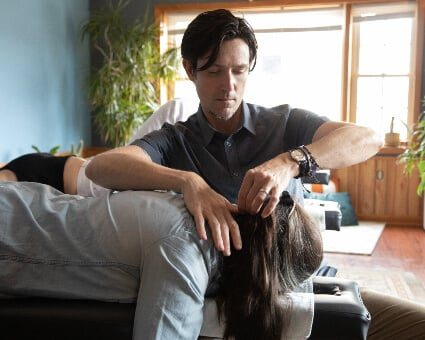
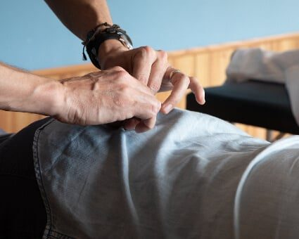
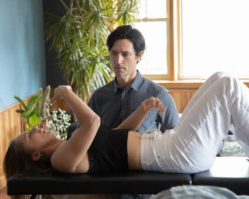
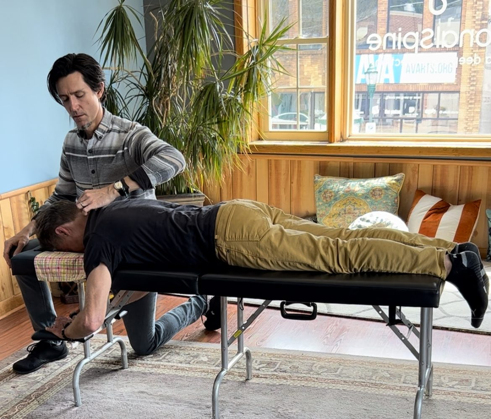
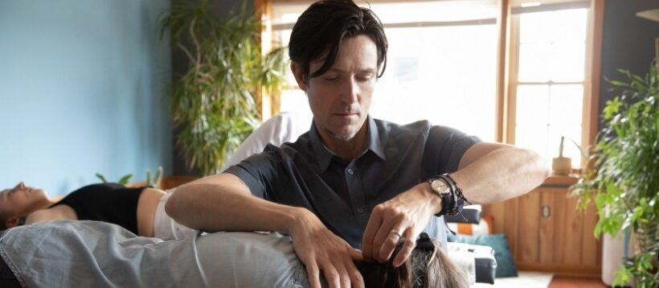

Design preview: this is a website concept created by Freightfolio. It is not the business's official website. Photos are real photos of this business, from its public Google listing and its own website.
The care at Tonal Spine Chiropractic is holistic chiropractic care using NetworkSpinal techniques, led by Dr. Dave Aitken. These are the services the practice describes.
01
Network Spinal Analysis
NetworkSpinal techniques, with checks by appointment at the Chattanooga practice.

Dr. Dave adjusting a patient face-down on a treatment table.
02
Chiropractic Care
Holistic chiropractic care centered on nervous-system function, congruence, and interference, led by Dr. Dave Aitken.

Hands at work during a lower-spine adjustment.
03
SRI and Breathing
SRI and breathing work, offered alongside the chiropractic care.

A breathing technique session on the treatment table.
04
Appointment-based checks
Checks are by appointment, led by Dr. Dave Aitken. Call to ask about scheduling.

Dr. Dave adjusting a patient by the window, with plants and the TonalSpine sign on the glass behind him.

Dr. Dave adjusting a patient on a treatment table, with plants and large windows behind him.